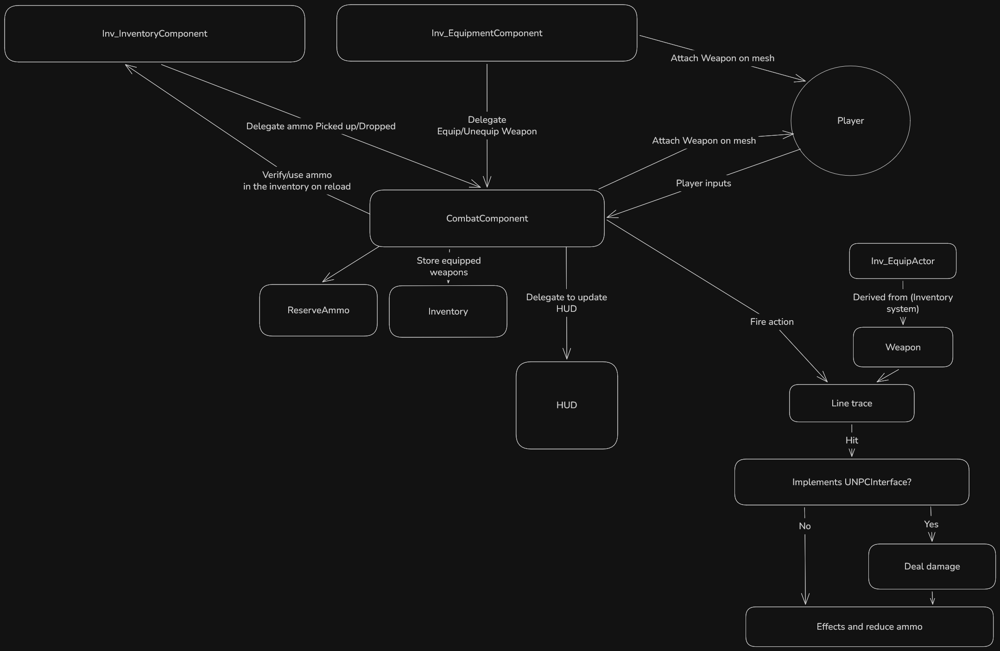

Engine Version: Unreal Engine 5.6 | Language: C++ / Blueprints
This system was built upon Stephen Ulibarri's C++ First-Person Shooter baseline, with extension to the Inventory System for equip actors.
IPlayerInterface & INPCInterface): Decoupled interaction between different actors.Visual overview of how the interaction component communicates with interactive world actors via C++ interfaces.

Took advantage of Delegates to send information from the Inventory Plugin to the Combat Component.
// CombatComponent.cpp
//BeginPlay
if (UInv_EquipmentComponent* EquipmentComponent = PC->FindComponentByClass())
{
EquipmentComponent->OnEquipWeapon.AddDynamic(this, &ThisClass::OnEquipWeapon);
EquipmentComponent->OnUnequipWeapon.AddDynamic(this, &ThisClass::OnUnequipWeapon);
}
if (UInv_InventoryComponent* IC = PC->FindComponentByClass())
{
InventoryComponent = IC;
InventoryComponent->OnAmmoPickedUp.AddDynamic(this, &ThisClass::HandleAmmoPickedUp);
InventoryComponent->OnAmmoDropped.AddDynamic(this, &ThisClass::HandleAmmoDropped);
}
} // CombatComponent.cpp
void UCombatComponent::OnEquipWeapon(AInv_EquipActor* EquippedActor)
{
if (ABaseWeapon* Weapon = Cast(EquippedActor))
{
Inventory.AddUnique(Weapon);
int32 AmmoFromInventory = InventoryComponent->AmmoCountInInventory(Weapon->GetAmmoType());
if (AmmoFromInventory < 0) AmmoFromInventory = 0;
ReserveAmmo.Add(Weapon->WeaponType, AmmoFromInventory);
}
}
void UCombatComponent::OnUnequipWeapon(AInv_EquipActor* EquippedActor)
{
if (ABaseWeapon* Weapon = Cast(EquippedActor))
{
Inventory.Remove(Weapon);
if (CurrentWeapon == Weapon)
{
CurrentWeapon = nullptr;
bHolstered = true;
bIsCurrentWeaponValid = false;
}
}
}
Trace when firing with custom trace channel and custom parameters.
// Weapon.cpp
//WeaponTrace to return what we hit with Line trace
void ABaseWeapon::WeaponTrace(FHitResult& OutHit, float TraceLengthWeapon)
{
FCollisionQueryParams QueryParams;
QueryParams.bReturnPhysicalMaterial = true;
QueryParams.AddIgnoredActor(GetOwner());
FCollisionResponseParams ResponseParams;
ResponseParams.CollisionResponse.SetAllChannels(ECR_Ignore);
ResponseParams.CollisionResponse.SetResponse(ECC_Pawn, ECR_Block);
ResponseParams.CollisionResponse.SetResponse(ECC_WorldStatic, ECR_Block);
ResponseParams.CollisionResponse.SetResponse(ECC_WorldDynamic, ECR_Block);
ResponseParams.CollisionResponse.SetResponse(ECC_PhysicsBody, ECR_Block);
ensure(GetInstigator());
if(APlayerController* PC = Cast(GetInstigator()->GetController()); IsValid(PC))
{
FVector EyesWorldLocation;
FRotator EyesWorldRotation;
PC->GetActorEyesViewPoint(EyesWorldLocation, EyesWorldRotation);
const FVector EyesWorldDirection = UKismetMathLibrary::GetForwardVector(EyesWorldRotation);
const FVector Start = EyesWorldLocation;
const FVector End = Start + EyesWorldDirection * TraceLengthWeapon;
const bool bHit = GetWorld()->SweepSingleByChannel(OutHit,
Start,
End,
FQuat::Identity,
TraceChannels::ECCWeapon,
FCollisionShape::MakeSphere(TraceRadius),
QueryParams,
ResponseParams);
if (!bHit)
{
OutHit.ImpactPoint = End;
}
if(bDebug)
{
if (bDisplayBoneHit)
{
GEngine->AddOnScreenDebugMessage(-1, 5.f, FColor::Yellow, FString::Printf(TEXT("Bone hit : %s!"), *OutHit.BoneName.ToString()), false);
}
}
}
Use of Player Interface and NPC Interface to get and send information to Pawns
// NPCInterface
UFUNCTION(BlueprintNativeEvent, BlueprintCallable)
ENPCType GetCurrentNPCType();
UFUNCTION(BlueprintNativeEvent, BlueprintCallable)
bool IsNPCDead() const;
UFUNCTION(BlueprintNativeEvent, BlueprintCallable)
bool DoDamage(float DamageAmount, AActor* DamageInstigator);
//Usage in Combat Component
const bool bHit = IsValid(Hit.GetActor()) && Hit.GetActor()->Implements();
bool bLethal = false;
if (bHit)
{
if (INPCInterface::Execute_IsNPCDead(Hit.GetActor())) return;
bLethal = INPCInterface::Execute_DoDamage(Hit.GetActor(), CurrentWeapon->GetDamage() * DamageMultiplier, GetOwner());
}
Receive events notifier from BP to CPP to trigger actions at the right time.
// PlayerInterface
//From BP => CPP
UFUNCTION(BlueprintNativeEvent, BlueprintCallable)
void Notify_ReloadWeapon();
//Player Character.cpp
void APlayerCharacter::Notify_ReloadWeapon_Implementation()
{
CombatComponent->NotifyReloadWeapon();
}